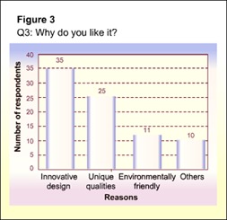

A short description should be provided to explain what the charts show.
Click each finding below done by Brad's group to view its description.
Majority of the respondents will buy the jewellery.
Charts representing the results from the interviews.
Explanation
This finding can be seen from Figure 1 where 70% of the respondents indicated that they will buy the jewellery.
Rings are the most popular item
Charts representing the results from the interviews.
Explanation
This finding is evident from Figure 2. 28 out of 50 respondents indicated that they like the rings most.
The two major factors that appeal to the respondents are the innovative design and unique qualities.
Charts representing the results from the interviews.
Sequencing Your Findings:
For your projects, you may present the findings that are most related to your problem statement first.
In this example, Brad’s problem statement is "Will Singaporean female teenagers buy jewellery made from stones and recycled materials?" Therefore finding 1, "Majority of the respondents will buy the jewellery", should be presented first.
Explanation
It can be seen from Figure 3 that "innovative design" and "unique qualities" scored the highest for reasons why respondents like the jewellery.
Click Next to continue.